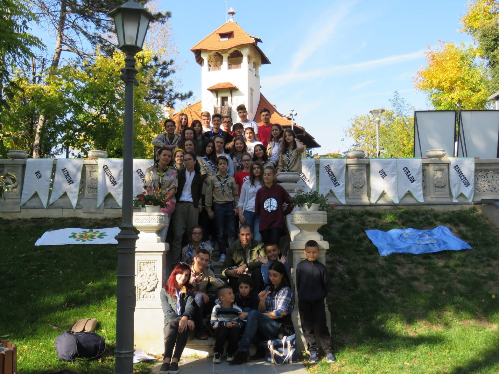

Am eliberat soarele și luna!

A patra ediție a Deschiderii Anului Cercetășesc la Cabana Scout a avut loc sâmbătă, 14.10 (cu o amânare de o săptămână) și a fost cel mai bun prilej de a ne cunoaște cu noii veniți și de a-i integra în lumea cercetășiei.
Înainte de începerea atelierelor, au avut loc două ceremonii de trecere la o altă unitate. Prima a fost Sonia care a trecut de la temerari la exploratori, apoi eu, de la exploratori la seniori.
Datorită curții Muzeului Nicolae Minovici, căruia îi mulțumim pentru găzduire, am putut să organizăm câteva puncte cu probe prin care aspiranții si cercetașii au trecut. Zmeii, care au furat luna și soarele, au organizat aceste puncte pentru a-i pregăti pentru anul ce urmează. Însă, zmeii nu erau ca toți ceilalți. Cel mut, cel surd, cel ciung și cel orb, au făcut jocuri, precum trecerea printr-un loc “minat”, cititul pe buze, realizarea unei tărgi umane și testarea reflexelor fără vedere. După încheierea jocului asociat fiecărui punct, aceștia primeau, în funcție de vârstă, o bucată din lună (exploratorii) și din soare (temerarii). La final, au lucrat împreună pentru a le pune cap la cap și a avut loc proba finală, care i-a provocat pe toți, simultan, reușind astfel să elibereze soarele și luna!
Mulțumim încă o dată Muzeul Nicolae Minovici și ne bucurăm că ne-am mărit, din nou, familia 💕.